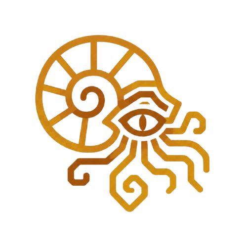

STOA - Living Atlas

A research tool, and emergent knowledge graph. Upload a technical paper, STOA will parse its contents, and identify the most relevant papers to guide your learning in across new fields.
Overview
The Concept
I'd done research through college, and now its a core part of my job. When I approach new technical domains I find it hard to quickly get my bearings. I wanted a tool that could help me quickly navigate a pile of research papers in a field I know nothing about. This project is my solution to that.
I tried to keep the underlying solution simple:
- Upload research paper to STOA
- STOA reads the paper and parses key information (core concepts, metadata, and embedding via sentence-transformer)
- STOA stores this paper and its information as a node in a graph database.
- STOA derives the three "most similar" papers based on the embedding vectors in the DB.
- STOA presents the updated graph, paper summaries, and guidance / reading direction.
Quick Demo
A quick overview / demonstration talking about and walking through the project.
Outcomes & Under the Hood
Learning
I'd say there are three main topics this project helped me learn about: Embeddings, Graph Theory, and bridging front end & backend.
Embeddings - I read some chapters from Rashka's 'Learn to build and LLM from scratch' in parallel with this project. This gave me a great conceptual understanding of what's actually going on and how I can quantifiably relate 'like' entities to one another.
in the backend I used a sentence-transform library to convert the ingested contents of a paper into one of these embeddings. Neo4j is given this embedding vector as an attribute with any new node (paper), and its told to use it as a queryable vector. On every new papers ingestion, similarity scores are queried from Neo4j which are used to reweigh top 3 nearest neighbors of each paper in close proximity to the new paper.
Something that is difficult to tune here is the cutoff for similarity scores. As I'm writing this I have it set at 0.65. I've only uploaded 20-30 papers, but its seems this is low enough to allow some cross-domain linking in technical region that aren't sparsely populated. Essentially, I'm trying to allow areas with few papers to create adequate, or semi-accurate preliminary links which can be replaced with stronger links as new papers are ingested. I'd just like things to lean slightly towards connections even when regions are sparse, rather than a bunch of unconnected nodes floating in space. I think this is something I'll need to continually play with as I add papers
AI models - I don't really have great hardware for running models at home, so my quick fix was a Claude API. I didn't want to blow money on tokens, so I kind of settled by margin decision comparing model training cap and cost. This was interesting because it was the first time I deeply compared models and tuned prompts with cost and accuracy being the main factors.
The long and short is, I was jumping back and forth between haiku and sonnet. I tried both with basic ingestion prompts, compared average price across a few papers. I got great results with sonnet but I wanted to lean towards haiku because it was averaging like four cents per paper instead of sonnets 10 cents. I prompt iteration / improvement process with haiku was probably the most iterative task in this project. At times it would pull content that wasn't necessarily the papers core concepts. I think it was kind of hitting a knowledge wall, my training papers had some technical content that's pretty niche, and for the lay reader pretty impenetrable. Eventually it got to a point where I felt it was profiling papers into finger prints which I could call, good quality, not excellent. I couldn't push much higher without diminishing returns, or straight decreased performance from prompt bloat.
As it stands I'm running with haiku. Its called for paper screening, and ingestion, and the whole process costs me about 2 cents per paper. I've spend a little under a dollar putting this whole project together.
Frontend to Backend - I've done a lot of front end stuff in the past, and some backend with relational DB's, but this is the first time I truly bridged front and back for a full stack web app.
I learned about how HTML is translated to python info is actually passed around via ASGI protocol. I read a fair bit into the whole pipeline, from HTML info through socket, to uvicorn converting it into ASGI, FastAPI reading [scope], pulling more info through [request] (like PDF contents), handling backend and returning through [send]. This was not confusing, I just never knew how it worked, so it was interesting to read.
I'm also impressed with how simple fast API and uvicorn are. In the past I used apache and PHP to talk to SQL servers, which was way more confusing to me than FastAPsI and Uvicorn. Glad to have gotten a better feel for it.
Continue exploring